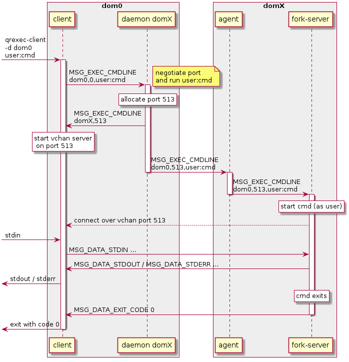
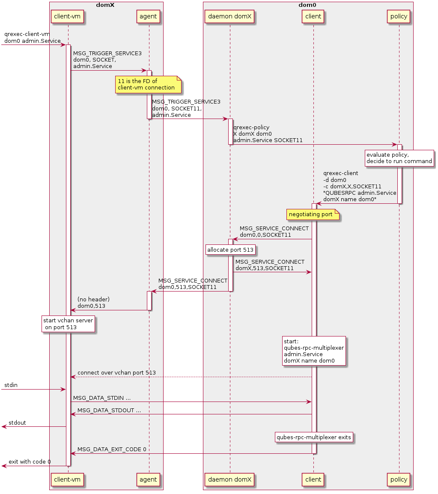
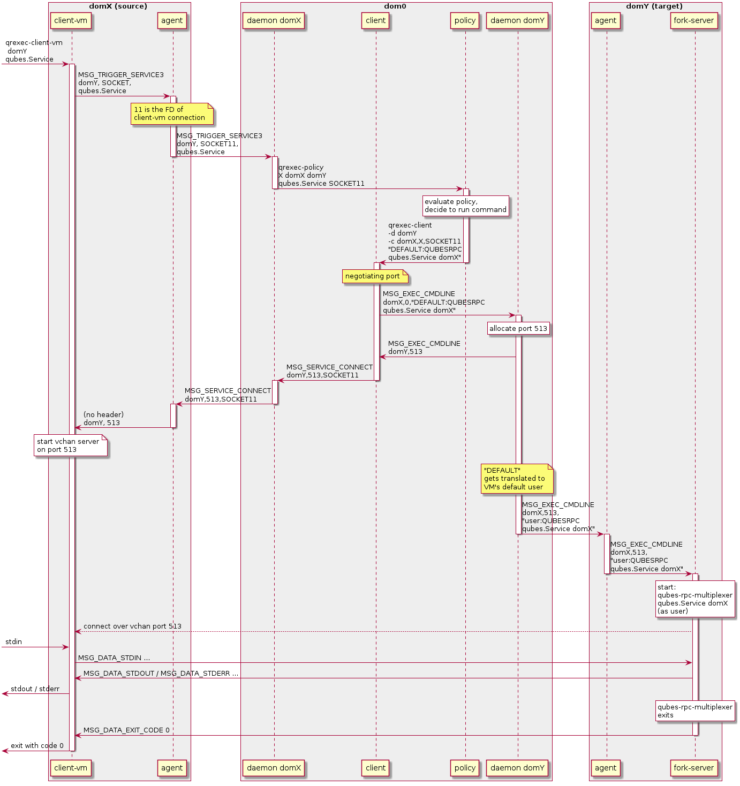

Qrexec: Qubes RPC internals
(This page details the current implementation of qrexec (qrexec3). A general introduction to qrexec is also available. For the implementation of qrexec2, see here .)
The qrexec framework consists of a number of processes communicating with each other using a common IPC protocol, described in detail below.
Components residing in the same domain (qrexec-client-vm to qrexec-agent, qrexec-client to qrexec-daemon) use local sockets as the underlying transport medium. Components in separate domains (qrexec-daemon to qrexec-agent, data channel between qrexec-agent(s)) use vchan links. Because of vchan limitation, it is not possible to establish qrexec connection back to the source domain.
Dom0 tools implementation
The following programs handle parts of the framework: sending and receiving requests, verifying permissions, and administering connections. These tools are not designed to be used by users directly.
qrexec-daemon
/usr/sbin/qrexec-daemon
One instance is required for every active domain. qrexec-daemon is responsible for both:
handling execution and service requests from dom0 (source:
qrexec-client); andhandling service requests from the associated domain (source:
qrexec-client-vm, thenqrexec-agent).
Command line usage:
qrexec-daemon domain-id domain-name [default user]
domain-id: Numeric Qubes ID assigned to the associated domain.domain-name: Associated domain name.default user: Optional. If passed,qrexec-daemonuses this user as default for all execution requests that don’t specify one.
qrexec-client
/usr/bin/qrexec-client
Used to pass execution and service requests to qrexec-daemon.
Command line usage:
-d target-domain-name: Specifies the target for the execution/service request.-l local-program: Optional. If present,local-programis executed and its stdout/stdin are used when sending/receiving data to/from the remote peer.-e: Optional. If present, stdout/stdin are not connected to the remote peer. Only process creation status code is received.-c <request-id,src-domain-name,src-domain-id>: used for connecting a VM-VM service request byqrexec-policy. Details described below in the service example.cmdline: Command line to pass toqrexec-daemonas the execution/service request. Service request format is described below in the service example.
VM tools implementation
qrexec-agent
/usr/lib/qubes/qrexec-agent
One instance runs in each active domain. Responsible for:
Handling service requests from
qrexec-client-vmand passing them to connectedqrexec-daemonin dom0.Executing associated
qrexec-daemonexecution/service requests.
The qrexec-agent command takes no parameters.
qrexec-client-vm
/usr/bin/qrexec-client-vm
Runs in an active domain. Used to pass service requests to qrexec-agent.
Command line usage:
qrexec-client-vm target-domain-name service-name local-program [local program arguments]
target-domain-name: Target domain for the service request. Source is the current domain.service-name: Requested service name.local-program:local-programis executed locally and its stdin/stdout are connected to the remote service endpoint.
Qrexec protocol details
The qrexec protocol is message-based. All messages share a common header followed by an optional data packet.
/* uniform for all peers, data type depends on message type */
struct msg_header {
uint32_t type; /* message type */
uint32_t len; /* data length */
};
When two peers establish connection, the server sends MSG_HELLO followed by peer_info struct:
struct peer_info {
uint32_t version; /* qrexec protocol version */
};
The client then should reply with its own MSG_HELLO and peer_info. The lower of two versions define protocol used for this connection. If either side does not support this version, the connection is closed.
Details of all possible use cases and the messages involved are described below.
dom0: request execution of cmd in domX

dom0:
qrexec-clientis invoked in dom0 as follows:$ qrexec-client -d domX [-l local_program] user:cmd
(If
local_programis set,qrexec-clientexecutes it and uses that child’s stdin/stdout in place of its own when exchanging data withqrexec-agentlater.)qrexec-clienttranslates that request into aMSG_EXEC_CMDLINEmessage sent toqrexec-daemon, withconnect_domainset to 0 (connect to dom0) andconnect_portalso set to 0 (allocate a port).
dom0:
qrexec-daemonallocates a free port (in this case 513), and sends aMSG_EXEC_CMDLINEback to the client with connection parameters (domX and 513) and with command field empty.qrexec-clientdisconnects from the daemon, starts a vchan server on port 513 and awaits connection.Then,
qrexec-daemonpasses on the request asMSG_EXEC_CMDLINEmessage to theqrexec-agentrunning in domX. In this case, the connection parameters are dom0 and 513.
domX:
qrexec-agentreceivesMSG_EXEC_CMDLINE, and starts the command (user:cmd, orcmdas useruser). If possible, this is actually delegated to a separate server (qrexec-fork-server) also running on domX.After starting the command,
qrexec-fork-serverconnects toqrexec-clientin dom0 over the provided vchan port 513.
Data is forwarded between the
qrexec-clientin dom0 and the command executed in domX usingMSG_DATA_STDIN,MSG_DATA_STDOUTandMSG_DATA_STDERR.Empty messages (with data
lenfield set to 0 inmsg_header) are an EOF marker. Peer receiving such message should close the associated input/output pipe.When
cmdterminates, domX’sqrexec-fork-serversendsMSG_DATA_EXIT_CODEheader toqrexec-clientfollowed by the exit code (int).
domX: request execution of service admin.Service in dom0

domX:
qrexec-client-vmis invoked as follows:$ qrexec-client-vm dom0 admin.Service [local_program] [params]
(If
local_programis set, it will be executed in domX and connected to the remote command’s stdin/stdout).qrexec-client-vmconnects toqrexec-agentand requests service execution (admin.Service) in dom0.qrexec-agentassigns an internal identifier to the request. It’s based on a file descriptor of the connectedqrexec-client-vm: in this case,SOCKET11.qrexec-agentforwards the request (MSG_TRIGGER_SERVICE3) to its correspondingqrexec-daemonrunning in dom0.
dom0:
qrexec-daemonreceives the request and triggersqrexec-policyprogram, passing all necessary parameters: source domain domX, target domain dom0, serviceadmin.Serviceand identifierSOCKET11.qrexec-policyevaluates if the RPC should be allowed or denied, possibly also launching a GUI confirmation prompt.(If the RPC is denied, it returns with exit code 1, in which case
qrexec-daemonsends aMSG_SERVICE_REFUSEDback).
dom0: If the RPC is allowed,
qrexec-policywill launch aqrexec-clientwith the right command:$ qrexec-client -d dom0 -c domX,X,SOCKET11 "QUBESRPC admin.Service domX name dom0"
The
-c domX,X,SOCKET11are parameters indicating how connect back to domX and pass its input/output.The command parameter describes the RPC call: it contains service name (
admin.Service), source domain (domX) and target description (name dom0, could also be e.g.keyword @dispvm). The target description is important in case the original target wasn’t dom0, but the service is executing in dom0.qrexec-clientconnects to aqrexec-daemonfor domX and sends aMSG_SERVICE_CONNECTwith connection parameters (dom0, and port 0, indicating a port should be allocated) and request identifier (SOCKET11).qrexec-daemonallocates a free port (513) and sends back connection parameters toqrexec-client(domX port 513).qrexec-clientstarts the command, and tries to connect to domX over the provided port 513.Then,
qrexec-daemonforwards the connection request (MSG_SERVICE_CONNECT) toqrexec-agentrunning in domX, with the right parameters (dom0 port 513, requestSOCKET11).
dom0: Because the command has the form
QUBESRPC: ..., it is started through thequbes-rpc-multiplexerprogram with the provided parameters (admin.Service domX name dom0). That program finds and executes the necessary script in/etc/qubes-rpc/.domX:
qrexec-agentreceives theMSG_SERVICE_CONNECTand passes the connection parameters back to the connectedqrexec-client-vm. It identifies theqrexec-client-vmby the request identifier (SOCKET11means file descriptor 11).qrexec-client-vmstarts a vchan server on 513 and receives a connection fromqrexec-client.
Data is forwarded between dom0 and domX as in the previous example (dom0-VM).
domX: invoke execution of qubes service qubes.Service in domY

domX:
qrexec-client-vmis invoked as follows:$ qrexec-client-vm domY qubes.Service [local_program] [params]
(If
local_programis set, it will be executed in domX and connected to the remote command’s stdin/stdout).
The request is forwarded as
MSG_TRIGGER_SERVICE3toqrexec-daemonrunning in dom0, then toqrexec-policy, then (if allowed) toqrexec-client.This is the same as in the previous example (VM-dom0).
dom0: If the RPC is allowed,
qrexec-policywill launch aqrexec-clientwith the right command:$ qrexec-client -d domY -c domX,X,SOCKET11 user:cmd "DEFAULT:QUBESRPC qubes.Service domX"
The
-c domX,X,SOCKET11are parameters indicating how connect back to domX and pass its input/output.The command parameter describes the service call: it contains the username (or
DEFAULT), service name (qubes.Service) and source domain (domX).qrexec-clientwill then send aMSG_EXEC_CMDLINEmessage toqrexec-daemonfor domY. The message will be with port number 0, requesting port allocation.qrexec-daemonfor domY will allocate a port (513) and send it back. It will also send aMSG_EXEC_CMDLINEto its corresponding agent. (It will also translateDEFAULTto the configured default username).Then,
qrexec-clientwill also sendMSG_SERVICE_CONNECTmessage to domX’s agent, indicating that it should connect to domY over port 513.Having notified both domains about a connection,
qrexec-clientnow exits.
domX:
qrexec-agentreceives aMSG_SERVICE_CONNECTwith connection parameters (domY port 513) and request identifier (SOCKET11). It sends the connection parameters back to the rightqrexec-client-vm.qrexec-client-vmstarts a vchan server on port 513. note that this is different than in the other examples:MSG_SERVICE_CONNECTmeans you should start a server,MSG_EXEC_CMDLINEmeans you should start a client.
domY:
qrexec-agentreceives aMSG_EXEC_CMDLINEwith the command to execute (user:QUBESRPC...) and connection parameters (domX port 513).It forwards the request to
qrexec-fork-server, which handles the command and connects to domX over the provided port.Because the command is of the form
QUBESRPC ...,qrexec-fork-serverstarts it usingqubes-rpc-multiplexerprogram, which finds and executes the necessary script in/etc/qubes-rpc/.
After that, the data is passed between domX and domY as in the previous examples (dom0-VM, VM-dom0).
qrexec-policy implementation
qrexec-policy is a mechanism for evaluating whether an RPC call should be allowed. For introduction, see Qubes RPC administration.
qrexec-policy-daemon
This is a service running in dom0. It is called by qrexec-daemon and is responsible for evaluating the request and possibly launching an action.
The daemon listens on a socket (/var/run/qubes/policy.sock). It accepts requests in the format described in qrexec-policy-daemon.rst and replies with result=allow/deny.
A standalone version is called qrexec-policy-exec and is available as a fallback.
qrexec-policy-agent
This is a service running in the GuiVM. It is called by qrexec-policy-daemon in order to display prompts and notifications to the user.
It is a socket-based Qubes RPC service. Requests are in JSON format, and response is simple ASCII.
There are two endpoints:
policy.Ask- ask the user about whether to execute a given actionpolicy.Notify- notify the user about an action.
See qrexec-policy-agent.md for protocol details.